14:00
偶然看到一组历时两年时间用延时摄影拍摄的美国，云在飞、星在跑、日出日落、风雨交加，一下子就能体会到长宽高之外的第四维度—时间。十一黄金周加上年假，我们去埃及……一个时间被浓缩的国家，我萌生尝试着用延时来记录埃及。
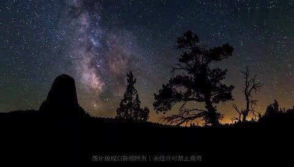
偶然看到一组历时两年时间用延时摄影拍摄的美国，云在飞、星在跑、日出日落、风雨交加，一下子就能体会到长宽高之外的第四维度—时间。十一黄金周加上年假，我们去埃及……一个时间被浓缩的国家，我萌生尝试着用延时来记录埃及。
第1天 北京-伊斯坦布尔-开罗 21:30 办理登机和出境手续 00:30+1 经伊斯坦布尔转机前往开罗 航班：TK21 00:10-05:25 06:35 转机前往开罗 航班：TK690 06:35-07:50
第2天 伊斯坦布尔-开罗（萨拉丁城堡+埃及博物馆） 07:50 抵达开罗，办理入境手续 09:00 萨拉丁城堡、穆罕默德·阿里清真寺 行驶距离: 约20公里 | 行驶时间: 约30分钟 | 游览时间: 约1小时30分钟 11:30 午餐：烤肉餐 行驶距离: 约20公里 | 行驶时间: 约30分钟 13:00 埃及博物馆（不含木乃伊展馆门票） | 游览时间: 约2小时 17:00 晚餐: 中餐 行驶距离: 约15公里 | 行驶时间: 约30分钟 19:00 前往酒店梦境赫尔南国际酒店(Helnan Dreamland Hotel)
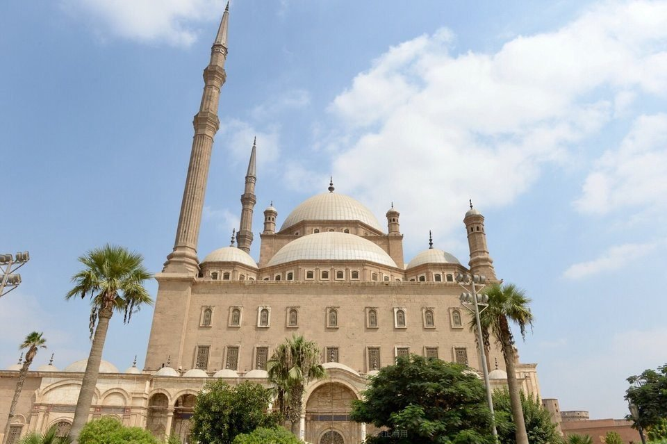
埃及之旅从开罗市区的穆罕默德·阿里清真寺开始，这是萨拉丁大城堡中最醒目的建筑，这座清真寺竣工于1848年，建筑师沿袭传统的奥斯曼清真寺的形式打造，整座建筑极具土耳其风韵。
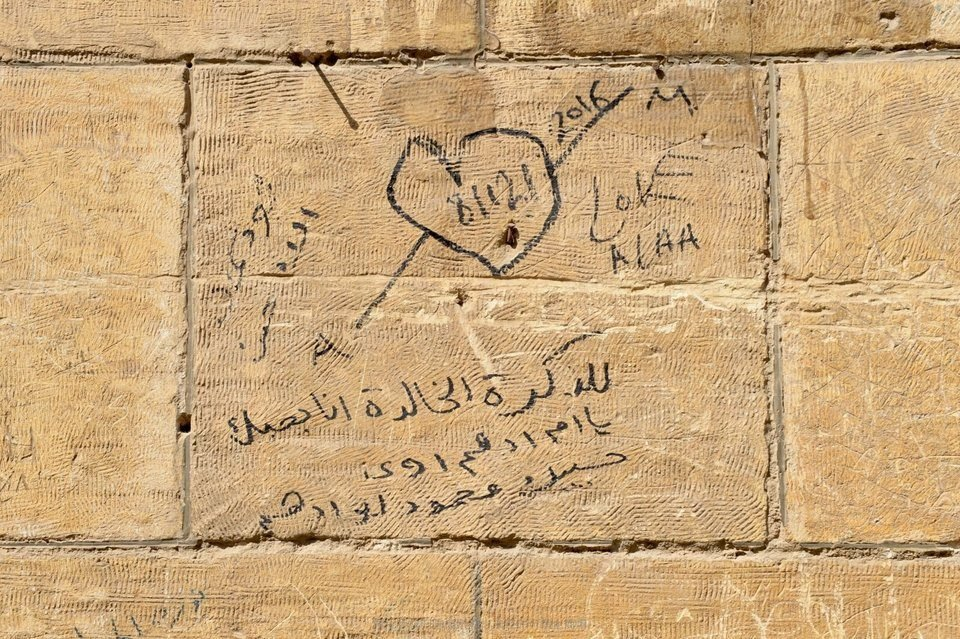
在开罗阿里大清真寺的墙外，我还没感觉来到了传说中那个6000年古墓与神迹交错、人与神共存的国度......直到......什么从腿边扫过，一个纤细、沙色的猫的背影，自阳光、石墙、影子中走出，头也没回，闪进一扇门。我瞬间理解了灵兽二字，光阴般无声的移动，自由进出远古与现在，也许她就是古埃及的入口？ 摘自吴欣还《我在埃及碰到的7位猫》
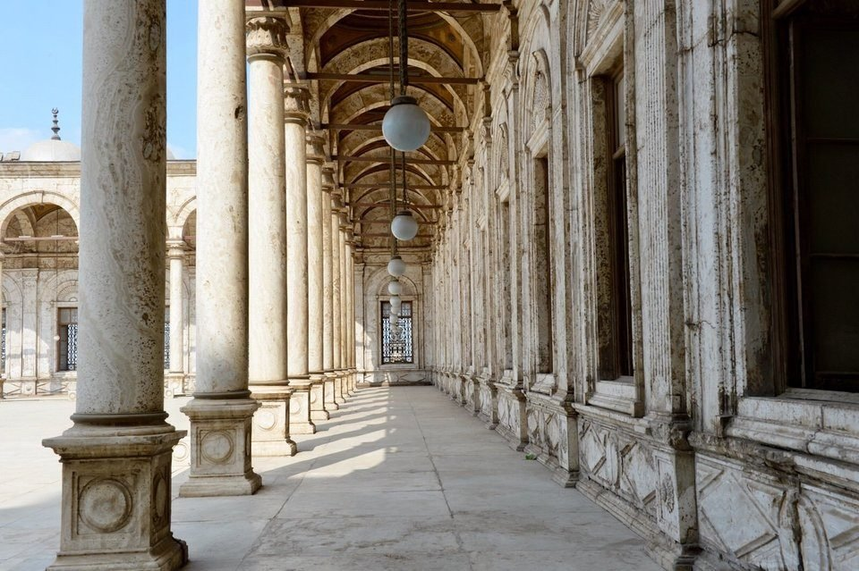
建筑大量使用雪花石膏来装饰门面，因此又有“雪花石膏清真寺”之称。摄影之旅开始了，延时是需要时间的，简单说短短5秒往往都要拍上40分钟，要一格一格的拍，对于时间安排是个新挑战……走马观花只能是静态的、粗浅的。
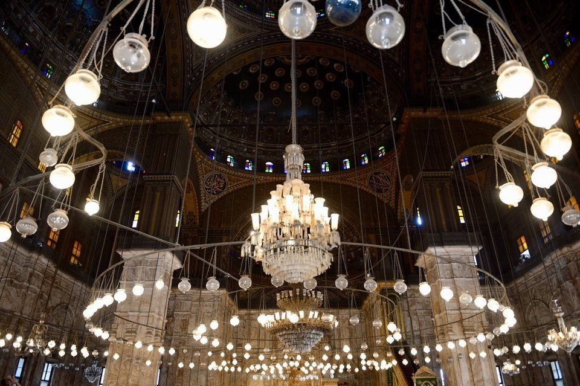
穆罕默德·阿里在埃及近代史上享有极高的声誉。他在19世纪统治了埃及，认为有必要在城堡中建造一座清真寺，以供祈祷用，于是花费18年的时间建造了这座清真寺。它象征着一个现代化的埃及，就如同金字塔是古埃及的标志一样。
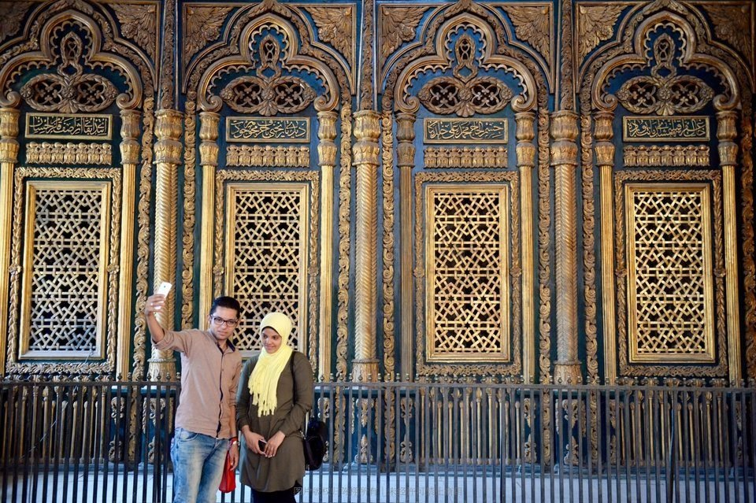
由于地势高阔，大城堡四周遍布可以眺望开罗市容的观景点，加上空间大、噪声小，这里也是开罗市民最爱的休闲去处之一。
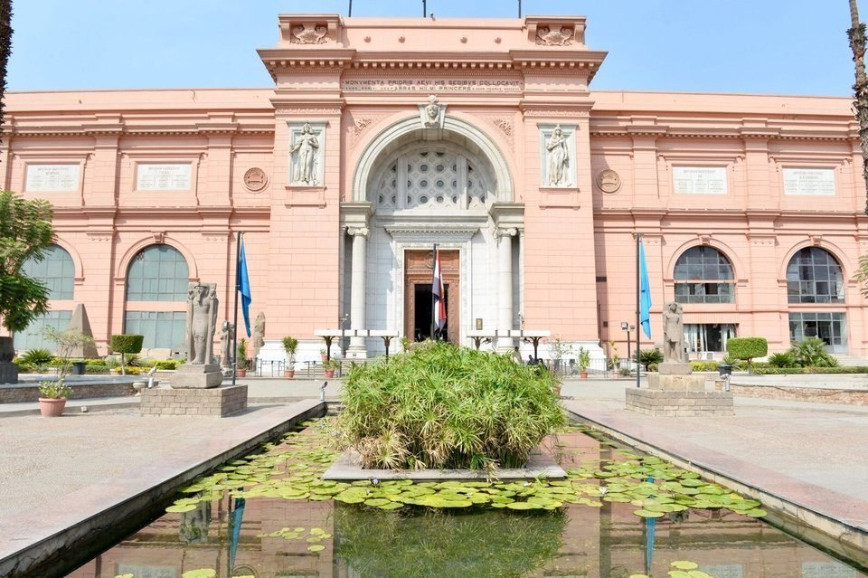
仅仅一次参观恐怕难以全面了解埃及博物馆的神奇。这里收藏着近15万件展品，如果以每件展品参观一分钟来计算，得要差不多半个月以上才能参观完毕。
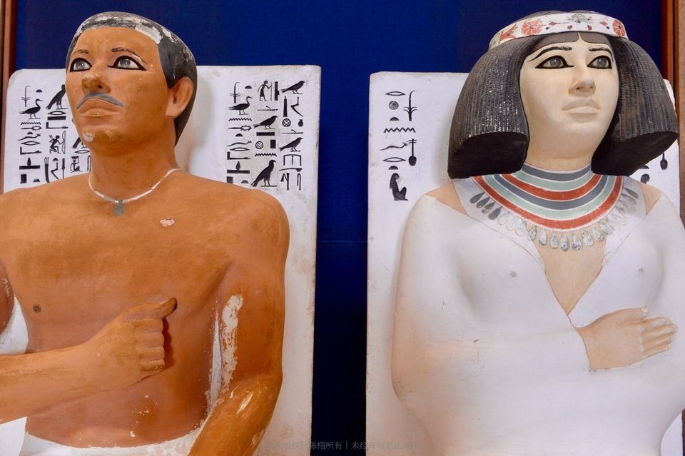
拉胡泰普和奈费尔特的双人雕像仔细算了算距今4600年了，第一次被埃及文明震撼到了……椅子上方刻有两人的名字和身份，强调两人属于王室，他们的眼睛是雕像的关键，由不透明的石英制作的眼眶中，镶嵌了天然水晶制作的眼球，两位都化了浓浓的眼妆，以此保护眼睛抵挡昆虫和阳光。
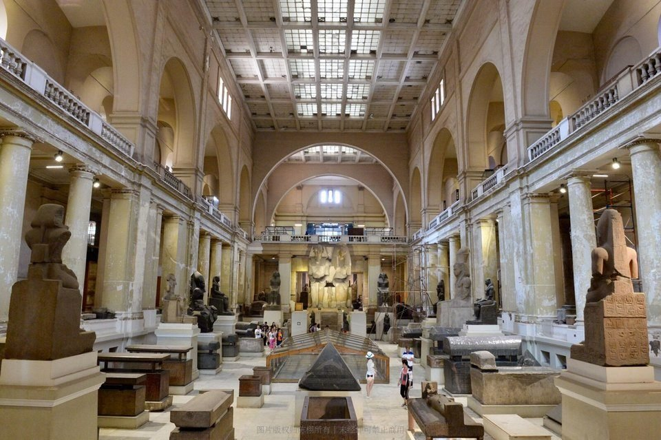
埃及博物馆一层按年代的顺序陈列，展出从古王国时期到公元5、6世纪罗马统治时期的文物，其中包括数量庞大的古代莎草纸和硬币，这些莎草纸经历了数千年的腐败，大都已经支离破碎，莎草纸碎片上发现了多种语言文字，包括希腊文、拉丁文、罗马文、阿拉伯文以及古埃及文。而硬币也有金币、银币和青铜币等各种各样的材质。这些硬币也不仅仅来自古埃及，还有些来自古希腊、古罗马以及伊斯兰地区。
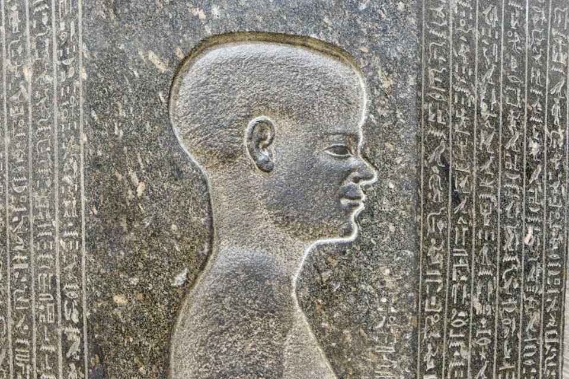
一层还陈列了新王国时期的艺术品，时间跨度约在公元前1550—1069年之间，这一时期有不少大型的文物，有雕像、桌子、石棺、石柱和浮雕墙等。
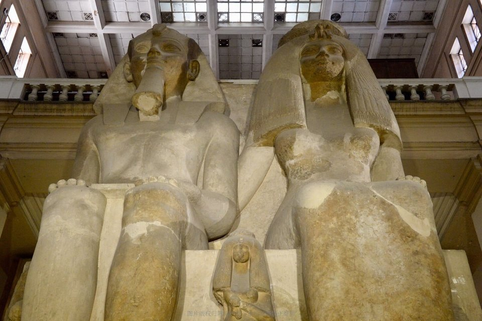
二楼是专题陈列室，文物来自埃及的最后两个王朝，也有许多出土自帝王谷，引人注目的是从保存完好的图坦卡蒙和普苏森尼斯二世陵墓中发掘出的文物，其中，图坦卡蒙陈列室中的黄金面具、人形金棺、黄金御座等堪称埃及博物馆的镇馆之宝。
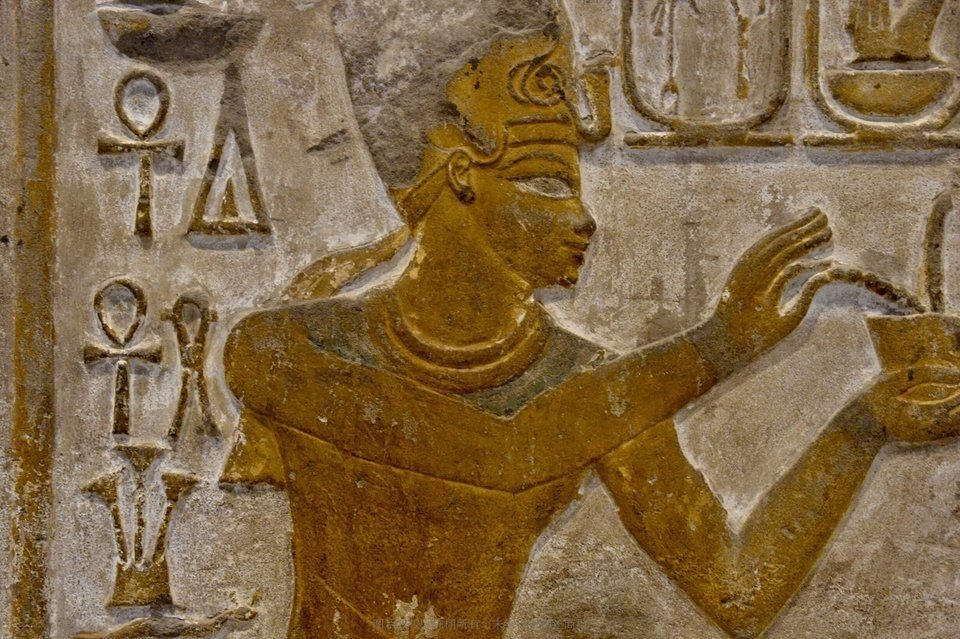
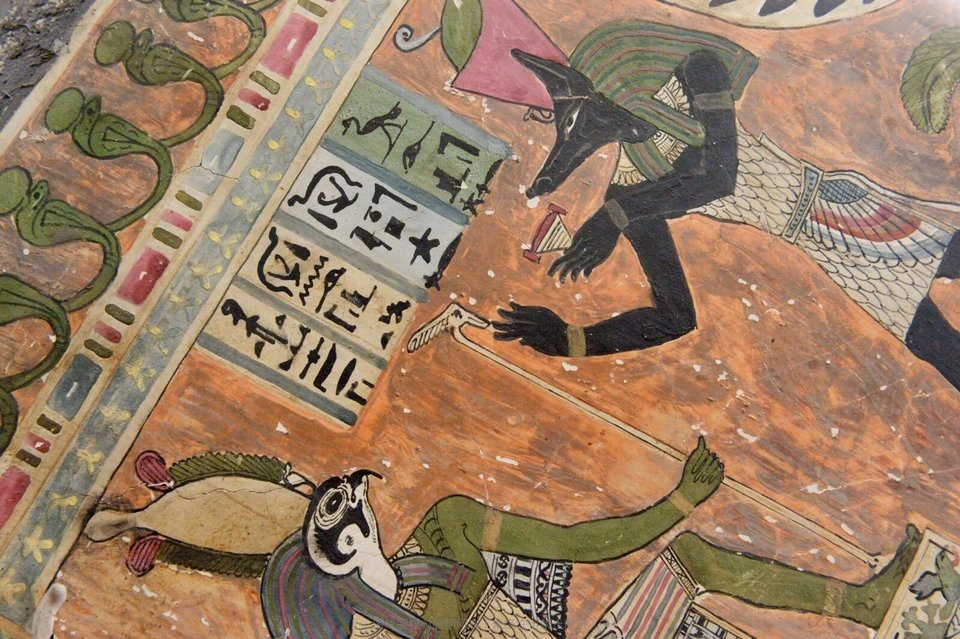
图坦卡蒙室陈列有1700余件出土文物。其中图坦卡蒙法老木乃伊的“黄金面罩”、“黄金棺材”、“黄金宝座”等。尤其是“黄金面罩”，是用金板依照国王生前容貌打造，镶满红宝石，额上还塑有象征上下埃及统治者的兀鹰和眼镜蛇。这些光辉灿烂的金制品，是古代埃及财产的丰富和法老权力巨大的充分体现。
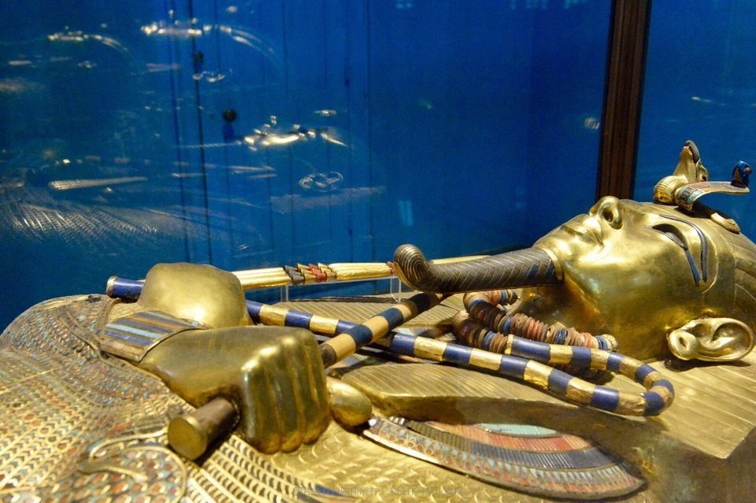
图坦卡蒙内层金棺纯金打造是盛放图坦卡蒙木乃伊的，图坦卡蒙看起来雍容华贵，装饰有各种王权的象征：带有眼镜蛇和xx额饰的内梅什巾冠，代表神圣的柱状胡须，手中握着权杖和神鞭……完整保存木乃伊是为了转世之后的灵魂第一时间能够找到。
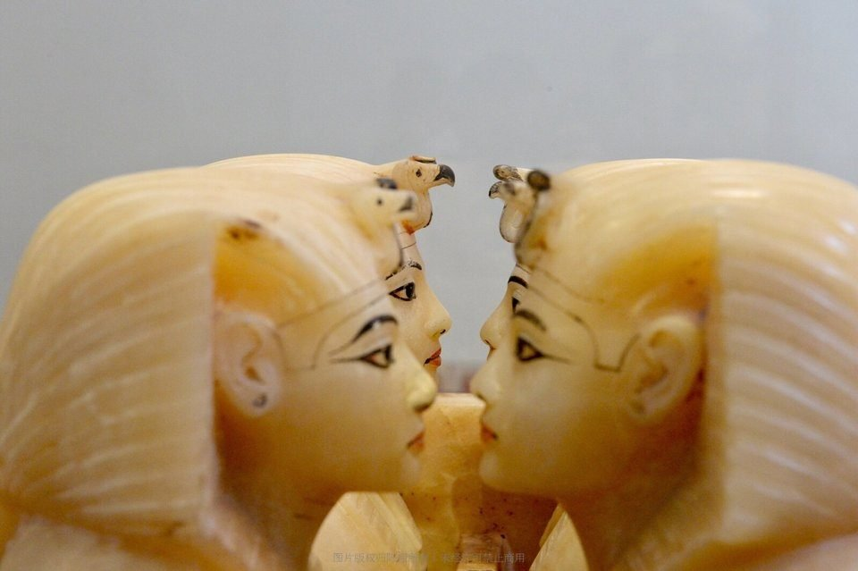
盛放内脏罐的雪花石膏箱有4个罐子，每个管子的盖子都是图坦卡蒙的头像，罐子里都在盛放着图坦卡蒙的内脏。
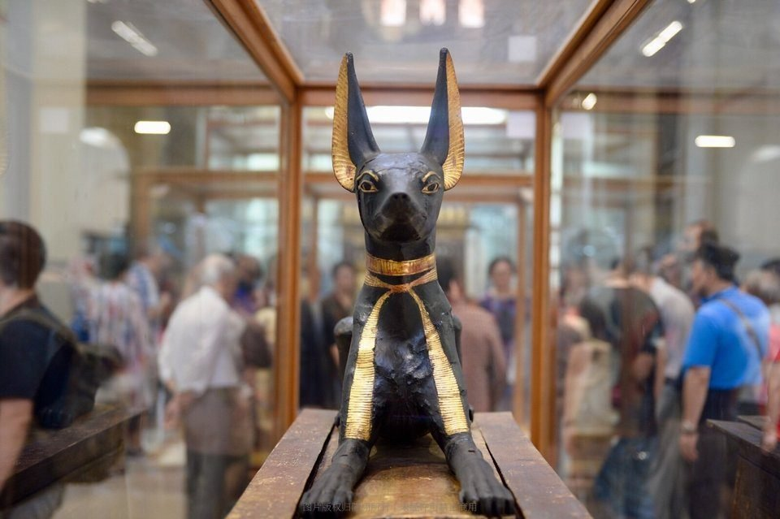
带有祭坛的阿努比斯神雕像是亡灵的守护神，化身是一只胡狼，它看起来非常紧张和警惕负责保护图坦卡蒙的墓穴。
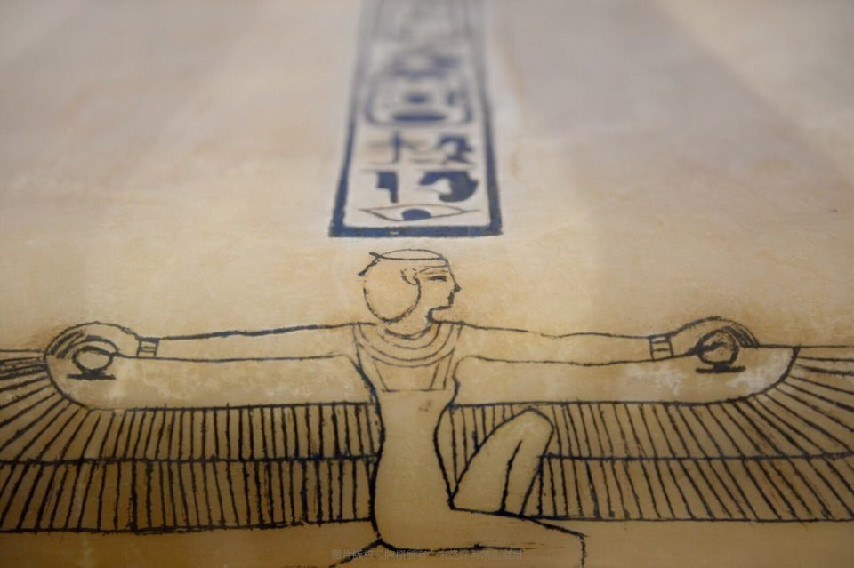
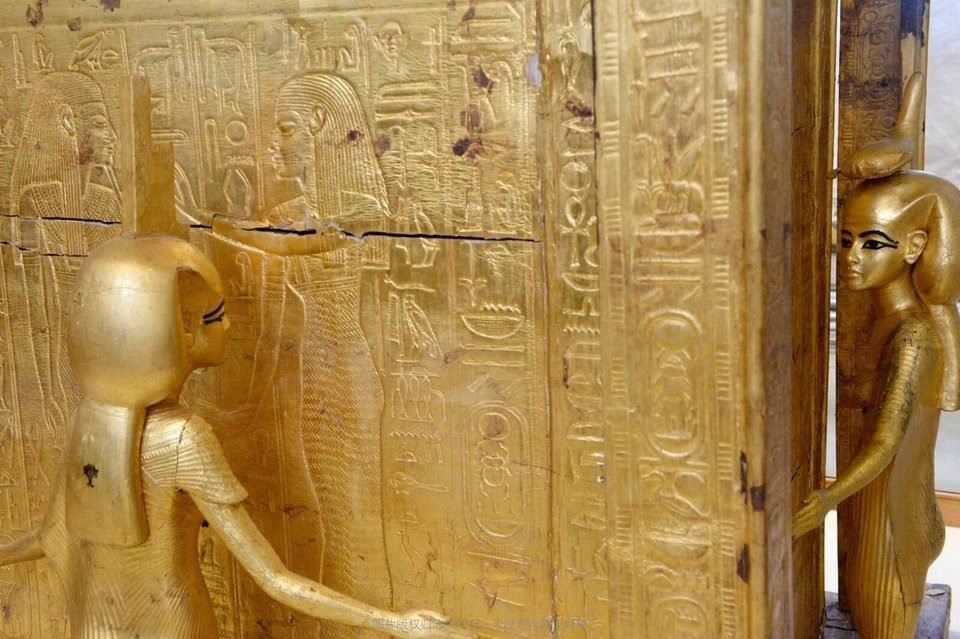
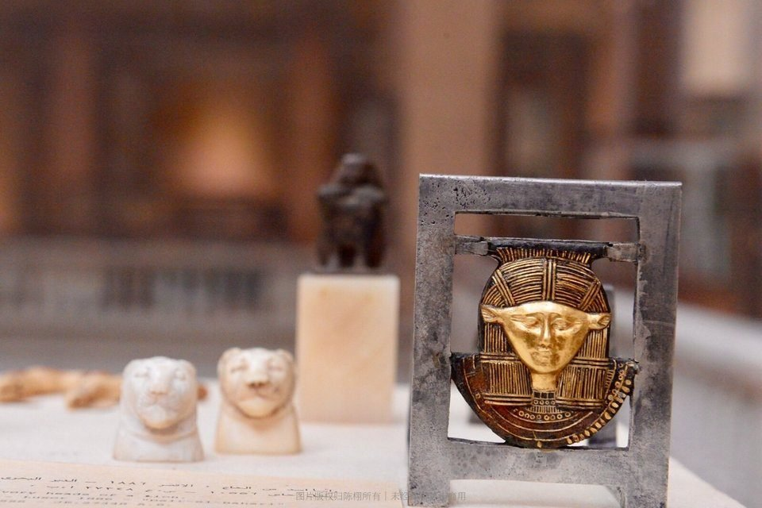
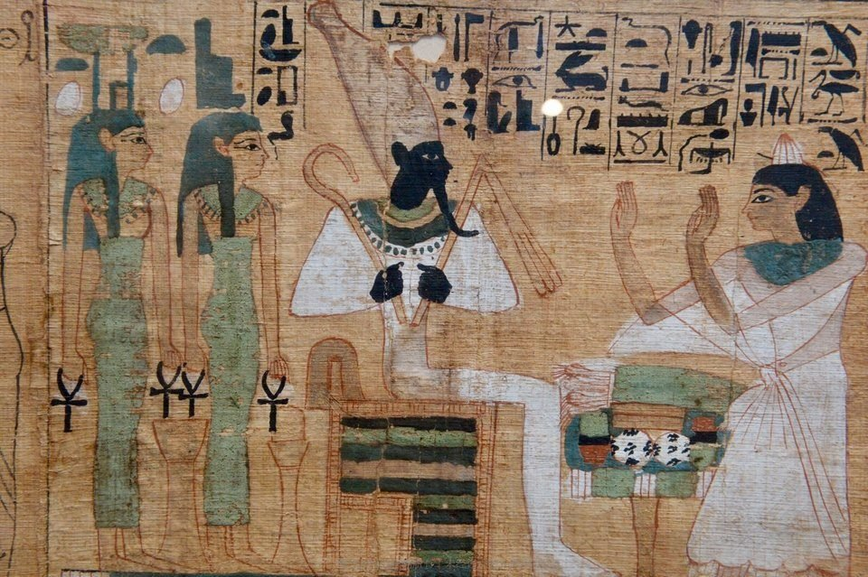
纸草画的纸张是由纸莎草制作的，被称为莎草纸或纸草纸。古埃及人很早就学会了用纸莎草做纸。莎草纸经过编织与粘接，可以变得很大，埃及出土的莎草纸中，最长的有50多米。古埃及人将他们的思想、工作、生活、宗教活动等画在泥板、石壁和陶片上，再依样搬到莎草纸上，就成了纸草画。
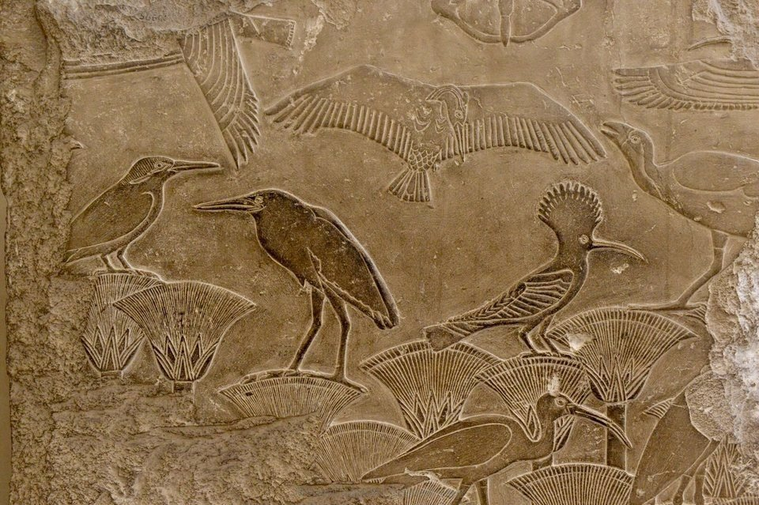
动物本身也处于人与神之间。埃及有金字塔的历史约4600多年，有法老有统一国家有文字的历史约5100年，岩洞中有绘画艺术的历史约15000年，有人类的历史约250000年，而传说在人之前，这片土地归神，那有神的历史不知多少年......在人与神共存的时候，神成百上千，而每个神几乎都与某种动物相关联。比如猫，还有牛、羊、鹰、狮子、鳄鱼、河马......什么是神？兼人与动物的特性于一身，并能在二者间自由切换的谓之神。对于人，离动物近一步就是离神近一步，离神近一步，也就离古埃及更近一步。 摘自吴欣还《我在埃及碰到的7位猫》
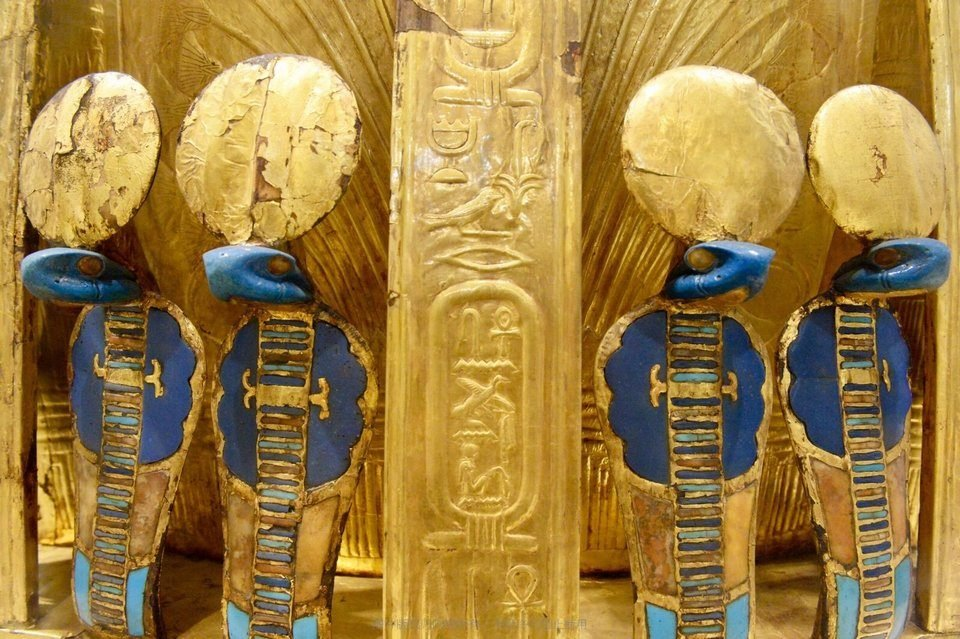
1922年，在图坦卡蒙陵墓中出土了这张有3000余年历史的王座。图坦卡蒙的诅咒的传说保护了法老的坟墓没有被盗，才使得王座保存至今。这是一张木制靠背椅子，上面贴镶着黄金、琉璃陶、银与宝石等物。座椅高约104厘米。
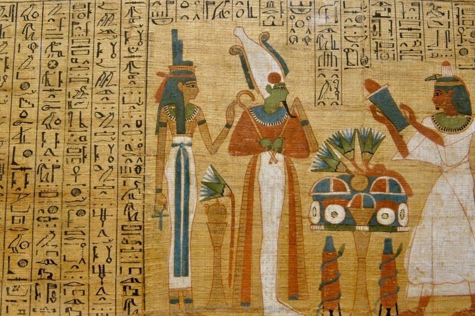
曾经，猫就是连接人与神的信使。尼罗河畔一座神庙的猫墓穴里发现过30万只猫的木乃伊，为什么，为了替人给神捎句话。如果你心里有个愿望要拜托神，怎么让他知道？基督徒会点个蜡烛，佛教徒会敬个香，古埃及人会献个猫或其他动物的木乃伊。它们会带着愿望来到神的身边，还能在神忙忘了的时候提醒他。据说全埃及埋藏着7千万只动物木乃伊，好多愿望啊。 19世纪，英国人曾一次就用船运走19吨的猫木乃伊，当肥料卖，这也敢用，不怕种出什么不可收拾的想法吗？ 摘自吴欣还《我在埃及碰到的7位猫》
第3天 开罗-亚历山大-开罗-阿斯旺 06:30 早餐: 酒店自助 07:30 前往亚历山大 | 行驶时间: 约3小时 10:30 庞贝柱 | 游览时间: 约45分钟 11:30 盖贝依城堡（外观） 行驶距离: 约5公里 | 行驶时间: 约15分钟 | 游览时间: 约1小时 12:30 午餐: 烤鱼餐 行驶距离: 约10公里 | 行驶时间: 约15分钟 13:30 夏宫花园 | 游览时间：约1小时 14:30 亚历山大图书馆（外观） | 游览时间：约30分钟 15:00 驱车返回开罗,约3小时 18:30 晚餐: 中餐 19:30 前往开罗机场 22:15 前往阿斯旺 航班：MS90 22:15-23:40 23:55 入住酒店:赫尔曼阿斯旺酒店-会展中心(Helnan Aswan Hotel - Convention Center) 行驶距离: 约10公里 | 行驶时间: 约10分钟
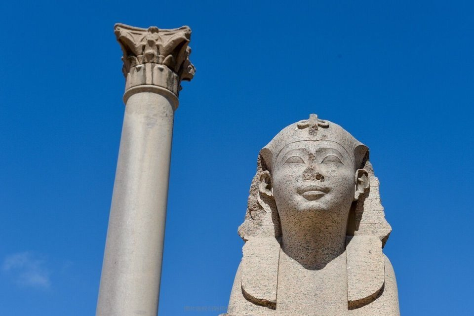
塞拉比斯大神庙，现在只剩下一根高30米的花岗岩柱子和几个狮身人面像。这里是亚历山大之神的神庙，更是曾经最伟大的亚历山大图书馆分馆。亚历山大图书馆建于公元前283年，统治者托勒密一世把图书馆命名为“缪斯的神龛”，打算收藏全世界的图书。藏书最多时达70万部，比当时存世的书籍总量还多。纸莎草纸的卷轴被分门别类地放在书架上，共一切有需要的人阅读。百余名学者在这里进进出出，欧几里得正写着他的《几何原本》，《荷马史诗》也正被整理出最权威的版本，在这计算出地球的周长，知道了地球绕着太阳转，还发现了人思考是用头脑而不是心脏......亚历山大因此成为地中海的文化中枢。更有趣的是，图书馆里不止有书，还有一个动物园，动物的智慧也被收在这里吗？ 摘自吴欣还《我在埃及碰到的7位猫》
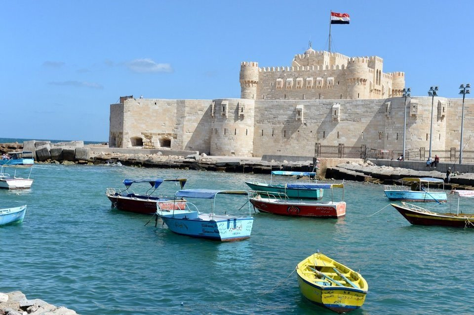
对古代水手来说，埃及海岸简直是一个噩梦：平坦的海岸线令海员们常被暗礁和浅滩所蒙蔽。公元前280年秋天的一个夜晚，月黑风高，一艘埃及的皇家喜船，在驶入亚历山大港时，触礁沉没了，船上的皇亲国戚及从欧洲娶来的新娘，全部葬身鱼腹。这一悲剧，震惊了埃及朝野上下。托勒密一世下令建造一座高塔，这样水手在靠岸之前很远就能看到。经过12年的修建，法罗斯灯塔终于于283年落成，因其规模宏大、形状独特，古代人将它评为世界七大奇迹之一。灯塔经历了17个世纪的风暴、洪水以及无数次潮汐，最终于1303年的一次强烈地震中倒塌。
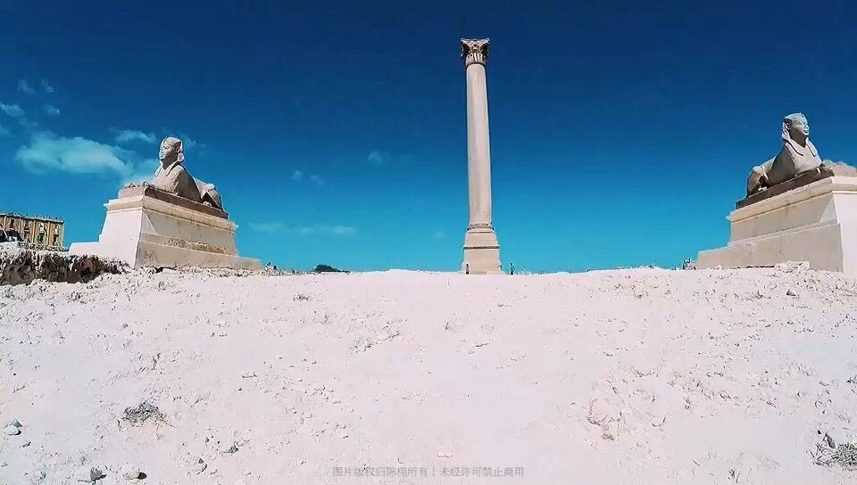
亚历山大是埃及最大的海港和全国第二大城市，建于公元前332年。亚历山大大帝决心修建一座世界最伟大的城市，他选择了地中海和马里奥湖之间的地域，并用自己的名字命名。现在亚历山大被誉为“地中海新娘”、“埃及新娘”。 第一次完成延时拍摄，效果挺好，只是在盖依堡Gopro进水不工作了，长征仅仅是第一步……压力山大！果断换手机拍！
第4天 阿斯旺（登尼罗河游轮） 08:00 早餐: 酒店自助 09:00 阿斯旺大坝与菲莱神庙 行驶距离: 约10公里 | 行驶时间: 约10分钟 | 游览时间: 约2小时 12:30 前往码头，办理游轮入住手续。 13:00 午餐: 游轮自助 14:00 自由活动 16:30 努比亚人风帆船畅游尼罗河 | 游览时间: 约30分钟 17:30 自由活动 20:00 晚餐：游轮自助
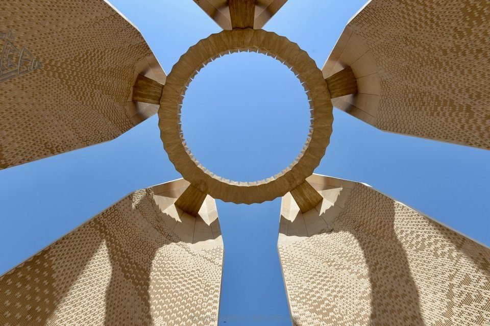
阿斯旺大坝最早于1898-1902年建造，用于灌溉和发电。到60年代，该坝已不能适应土地灌溉和电力供应的需要，于是埃及政府在旧坝上游6公里处开始修建现在的大坝，于1971年完成。
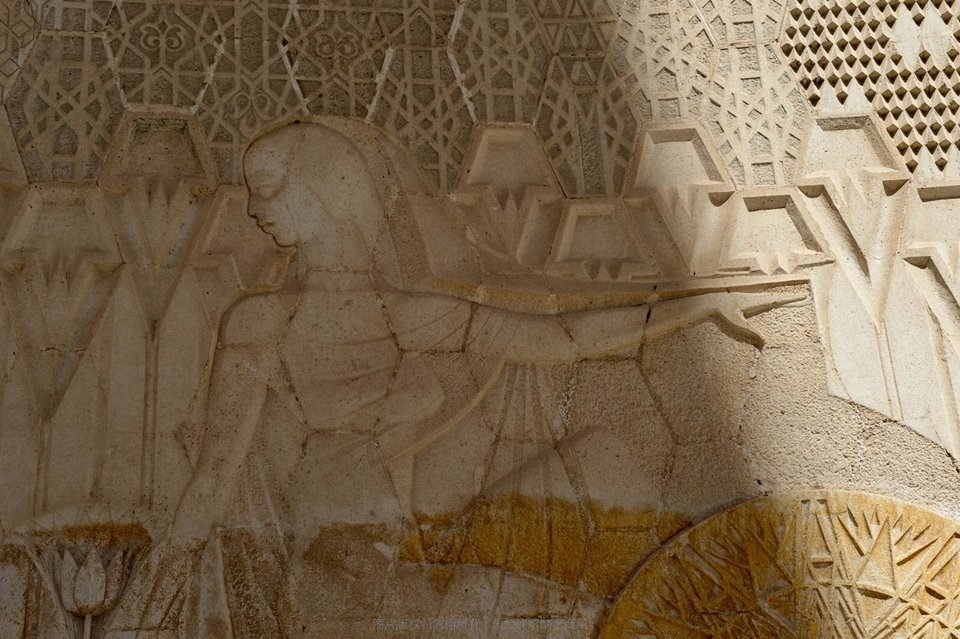
目前，大坝的发电量能够保证全国大部分的用电需要。大坝东端有观景台可供观赏大坝及水面景观。
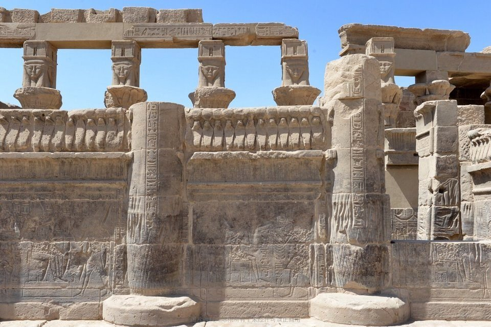
菲莱神庙里有目前发现的最后的象形文字碑文和一些形象生动的浮雕，在这里被祭奠的有富庶之神哈索尔和生育之神伊西斯等。据说女神伊西斯有一万个名字，她不仅掌管生育，还是所有人的庇护神，因而极受古埃及人的尊崇。
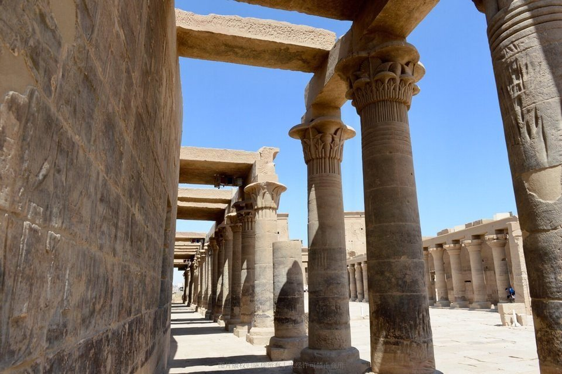
正午，在埃及最南端，尼罗河的一个小岛上，菲莱伊西斯神庙的巨大石柱前，猫与我对视了一小会儿。突然想起北京法海寺壁画上那一双双被画成小鸟的猛兽的眼睛，原来目光真的是可以飞翔可以穿越的。这里供奉的女神——伊西斯正展开自己的翅膀，化成飞鸟寻找自己的爱人，而她的儿子荷鲁斯的样子正是一只鹰。那一刻，我相信有神。 摘自吴欣还《我在埃及碰到的7位猫》
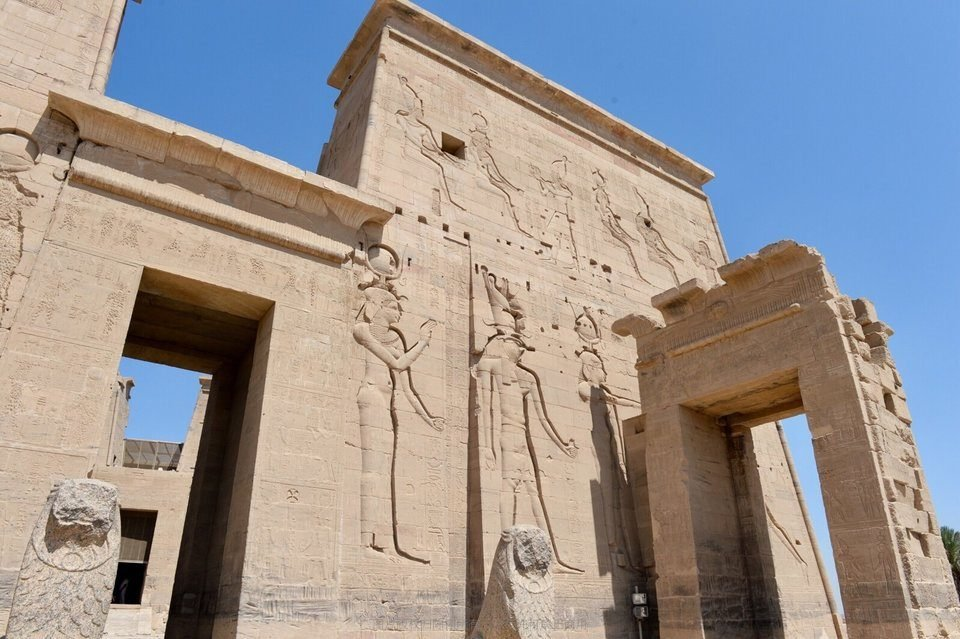
希罗多德的《历史》中说“在这些人之前，埃及的统治者是神，他们和人类共同生活在大地上，在每一代其中必有一位神掌握着最高主权。他们之中最后统治埃及的是奥西里斯的儿子荷鲁斯，希腊人则称之为阿波罗，他废除了赛特而成了埃及最后一代神圣的国王。” 摘自吴欣还《我在埃及碰到的7位猫》
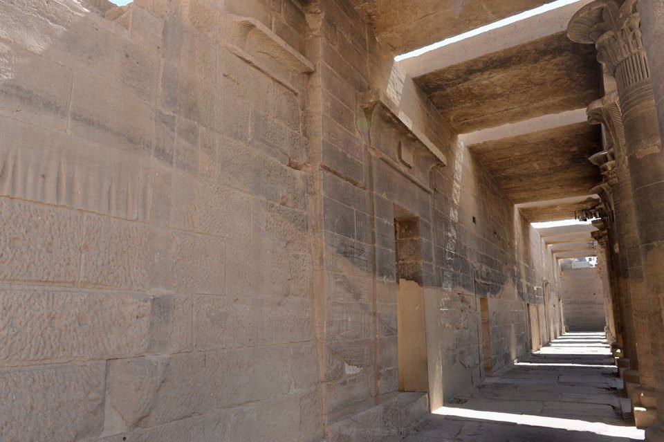
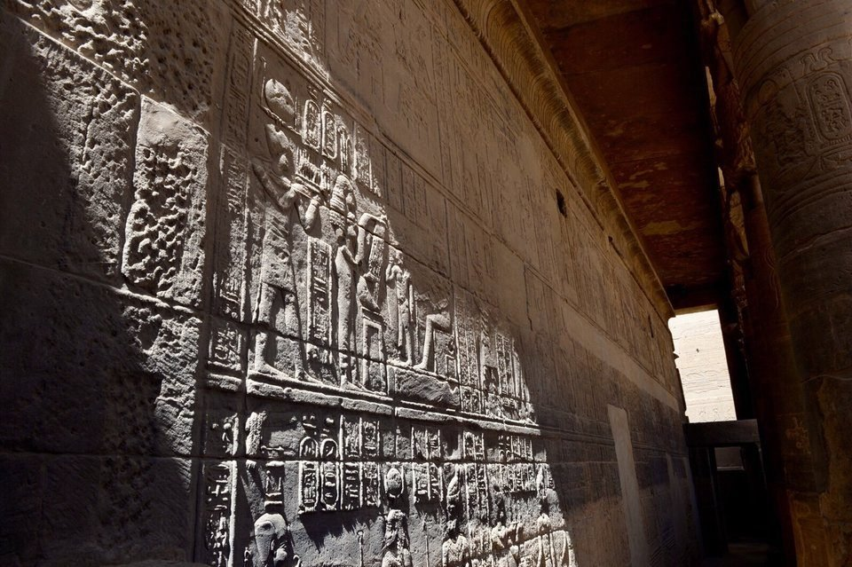
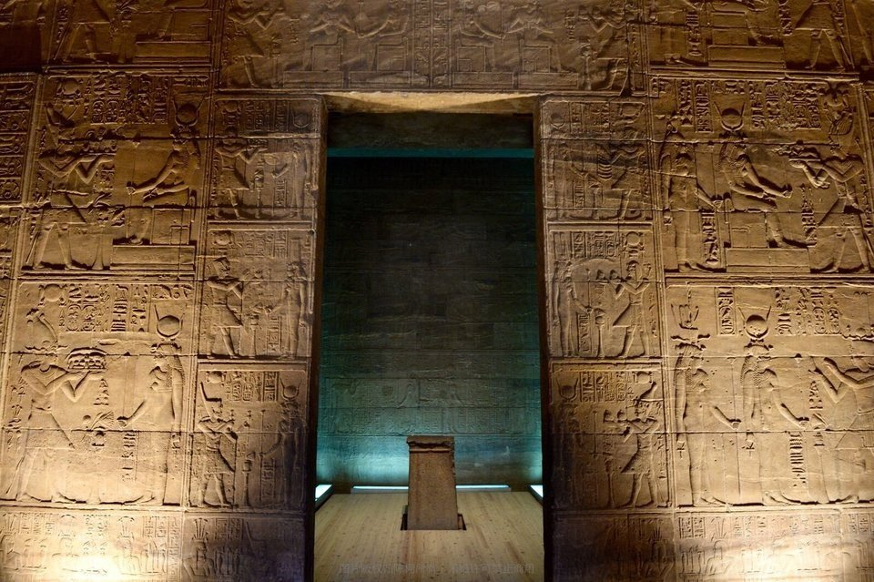
相传奥西里斯曾被弟弟赛特杀死了两次，尸体两次都被他的妻子伊西斯化成飞鸟找回，伊西斯做了埃及第一个木乃伊因此复活了爱的人。后来，奥西里斯当了冥界的王，以后，所有在世法老都认为自己是荷鲁斯，死去的法老则是奥西里斯，而所有埃及人都相信，尼罗河每年泛滥的水都是那个悲伤的妻子思念爱人的泪。 摘自吴欣还《我在埃及碰到的7位猫》
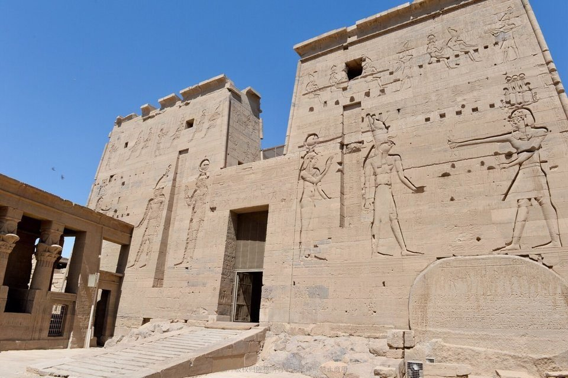
所以菲莱是个爱的神庙……
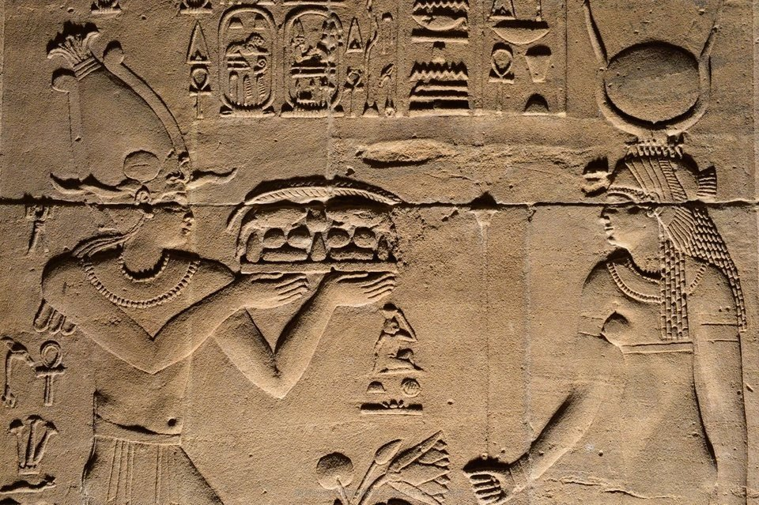
又听到这样的故事——每天入夜，太阳神会乘船在冥界行过，把光藏进猫的眼中，周而复始。一下就被这个说法迷住，在神与人共处的岁月，那些藏在眼睛里的白天是否可以被再次提取？如果我说一个日子，从她的眼中是否可以看到回放。 摘自吴欣还《我在埃及碰到的7位猫》
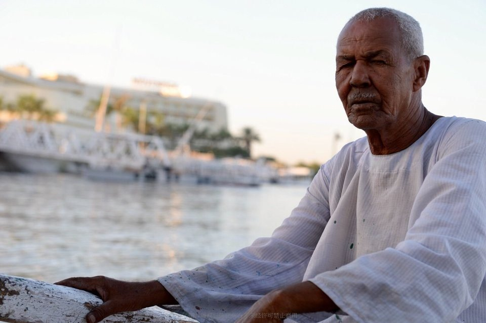
努比亚人的祖先早在四五千年前便已建立国家，并于公元前8世纪一度征服埃及。现在努比亚人是居住在埃及阿斯旺一带的少数民族，我们在尼罗河上体验的无动力帆船就是努比亚人驾驶的。
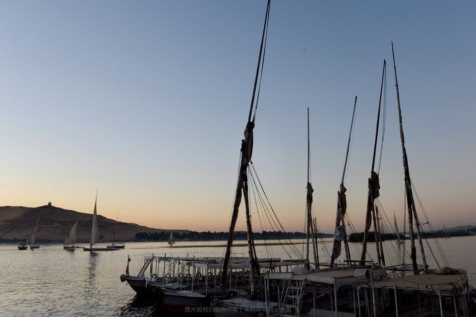
单桅小帆船无动力全靠人力，可以近距离感受尼罗河的美。还可以参观河心大象岛，观赏尼罗河的夕阳，小帆船漂了40分钟好的天光好的拍摄点非常适合拍摄延时，很可惜的是小帆船行程在完全日落之前就结束了，天光和颜色的变化并不明显，看来再次印证心急吃不了热豆腐，再多40分钟效果就会大不一样了。上岸之后天光变得越来越好！
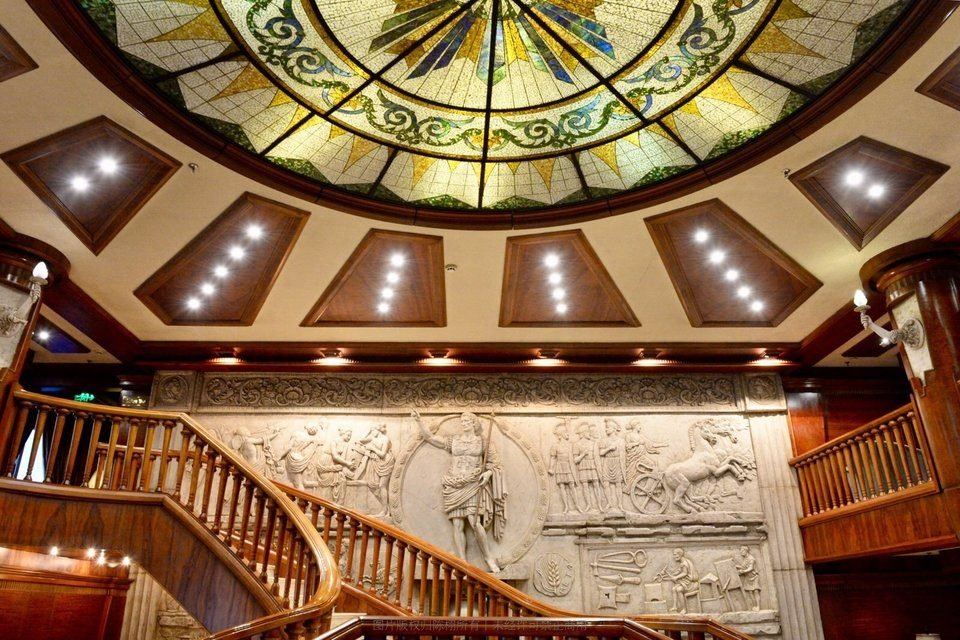
飞机可以把我们送到南部阿斯旺地区，但在历史上只有尼罗河游轮才是参观寺庙和沿尼罗河陵墓的唯一方式。尼罗河游轮分为三晚，四晚或者七晚。通常较短的行程是穿梭在卢克索和阿斯旺之间，而长途游轮会行驶到更北的地区Dendera，因而往往会提供去偏远地区的一日游。
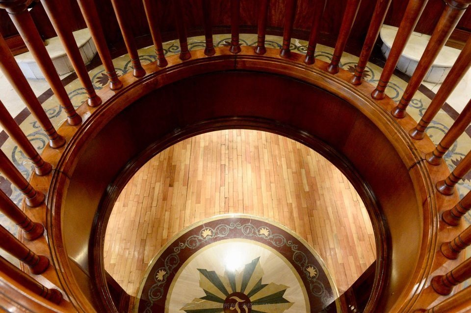
一个相当完整的14天埃及行程可能包括在开罗的几天，参观金字塔，博物馆及其他文物，一次短途飞行到阿布辛贝，然后在埃及的南部周围来一次尼罗河游船七日之旅。尼罗河游轮提供酒店一样的标准间、一天三顿的自助餐、酒水服务、晚间民族舞蹈表演以及一天至少1次的岸上观光。
第5天 阿斯旺-阿布辛贝-康翁波-埃德夫（尼罗河游轮） 04:30 前往阿布辛贝神庙 05:20 沙漠日出 08:00 阿布辛贝神庙 行驶距离: 约280公里 | 行驶时间: 约3小时 | 游览时间: 约1小时40分钟 14:00 午餐: 游轮自助 18:00 康翁波神庙 行驶距离: 约5公里 | 行驶时间: 约10分钟 | 游览时间: 约1小时30分钟 20:00 晚餐: 游轮自助
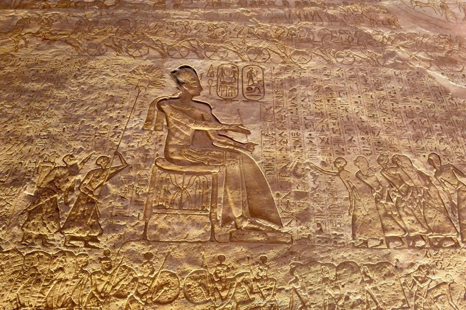
阿布辛贝神庙是阿斯旺的重要景点，位于阿斯旺以南280公里的地方，建于公元前1300－前1233年，是古埃及最伟大的法老拉美西斯二世所建，也是新帝国的法老王时代最受保护的遗迹。阿布辛贝勒和它下游至菲莱岛的许多遗迹一起作为努比亚遗址，被联合国教科文组织指定为世界遗产。
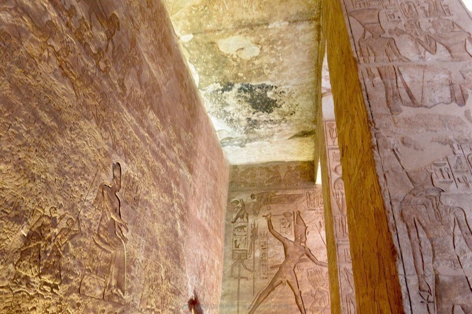
身着盔甲的勇士群雕整齐对称分立在石柱旁，大厅四周刻满壁画，记述着拉美西斯二世远征古努比亚所建树的卓著战功。 从选址到定向，从庙门设计到内部结构，从庙内壁画到庙外各尊神像的雕刻，都是拉美西斯二世的再现。
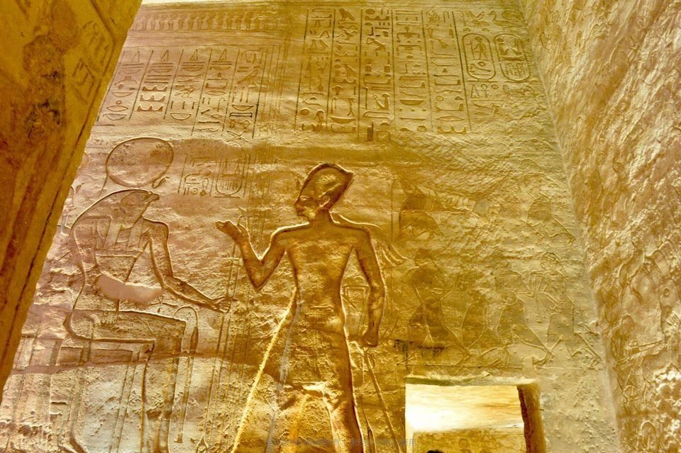
记录了一个重要事件，导游冰冰讲过，现在已经完全记不得了。神庙意在通过埃及最高统治者的力量征服当地的努比亚人。在大神庙里，壁画不仅刻画了在所有神庙中都能发现的宗教仪式，而且还刻写了描述国王军队作战的纪念场面和铭文。
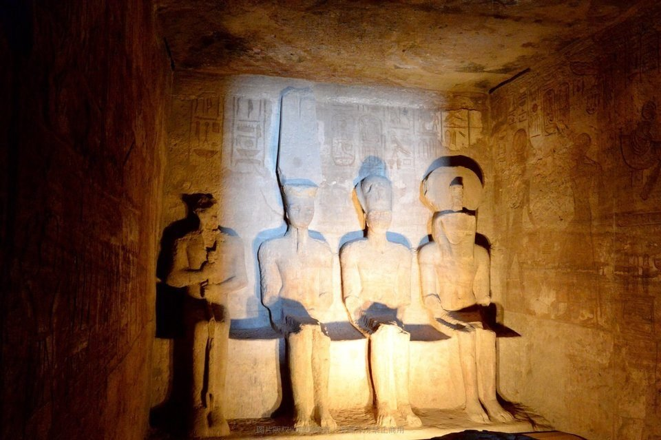
最深处的圣地内并排有四尊石像，从左至右分别是普塔赫神、阿蒙·拉神、神格化了的拉美西斯二世、拉·哈拉赫梯神。3000多年前的神庙设计者用了各种超牛X的知识，把神庙设计成为只有在拉美西斯二世的生日（2月21日）和登基日（10月21日）阳光才能从神庙大门射入，穿过60米深的庙廊，撒在神庙尽头的拉美西斯二世石雕巨像的全身上下，而左右的其他巨型石雕都享受不到太阳神赐予的这种厚爱，人们把这一奇观发生的时日称作太阳节。现在的神庙由于纳赛尔湖水位上涨，做过一次整体搬迁，阳光进入的时间已经变成了2月22日和10月22日……再次印证当年的设计者有多牛。
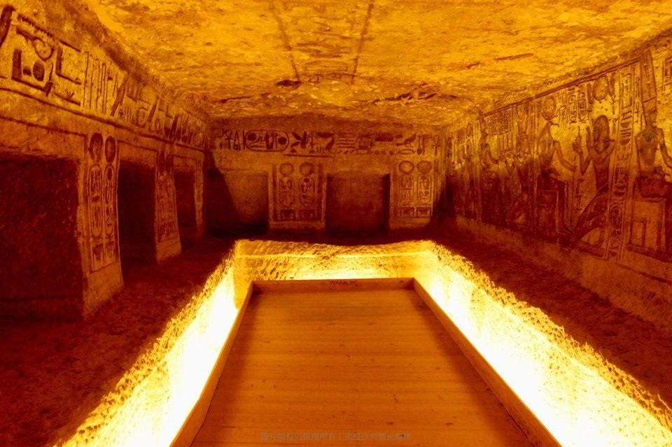
神庙内是不被允许照相的，但是如果愿意给守门人意思意思也可以被默许的，我为了更好地把握机会，给了守门人100埃币，协议就愉快地达成了……但是我一路被一位估计是俄罗斯的大妈指指点点，反复告诫我这里不能拍摄，不要拍摄，甚至要目不转睛的监督我，朝阳群众的产生不是一种偶然，世界大妈是一家，真正的世界警察是大妈……
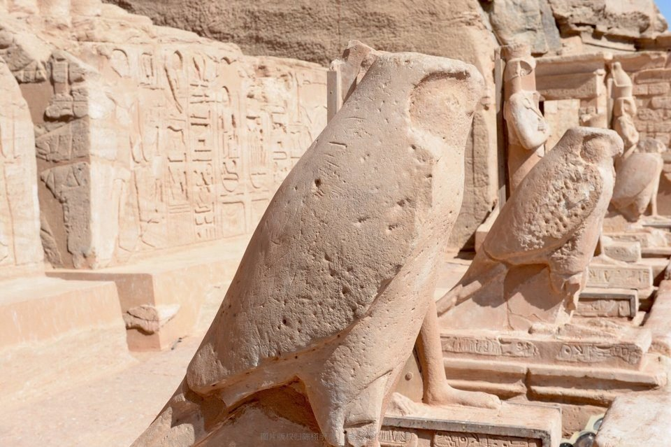
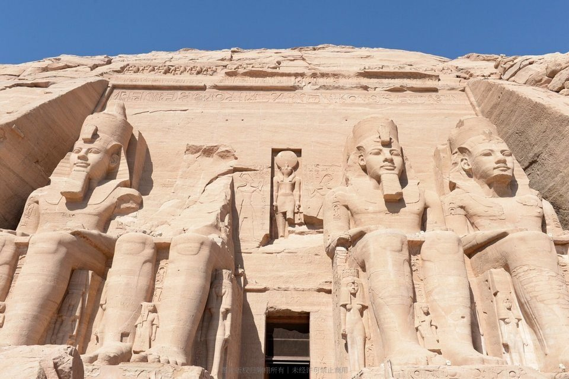
并排坐着四位不同年龄的拉美西斯二世，代表了拉美西斯不同时代的风貌。在这里花了30分钟拍摄，非常震撼的场景被熙熙攘攘的人头攒动解构了……据说阿布辛贝的声光秀是最好看的，没有之一！而且阿布辛贝的星空和日出都非常美，只有在这里过夜才能体会到，错过团队游览集中的时间，这里会变得非常安静，这不能不说是行程中的一种遗憾，下次吧！
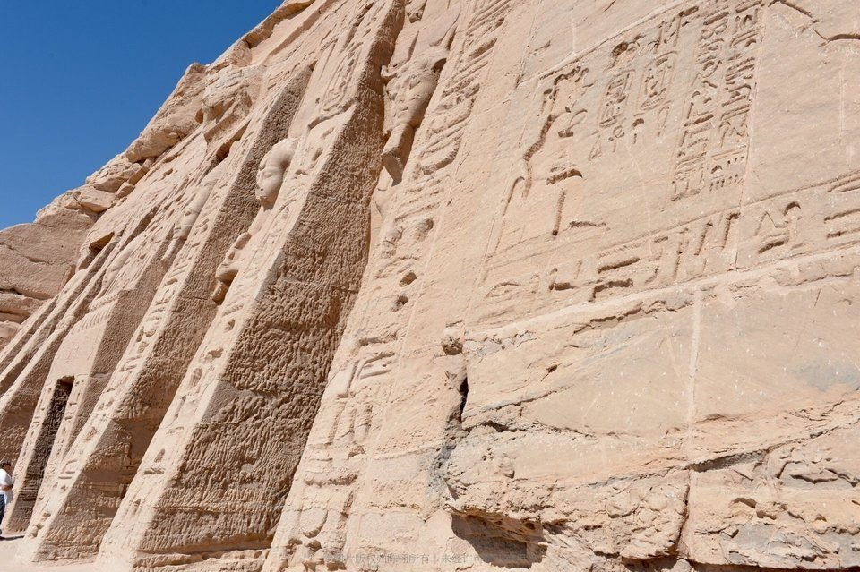
哈索尔神庙距离阿布辛贝神庙50米，是拉美西斯二世为他的妻子奈菲尔塔利修建的。这座神庙规模较小，也是在峭壁斜坡上雕凿而成的。正面雕刻有6尊高约10米的立像，其中3尊为拉美西斯二世，另外3尊为奈菲尔塔利。
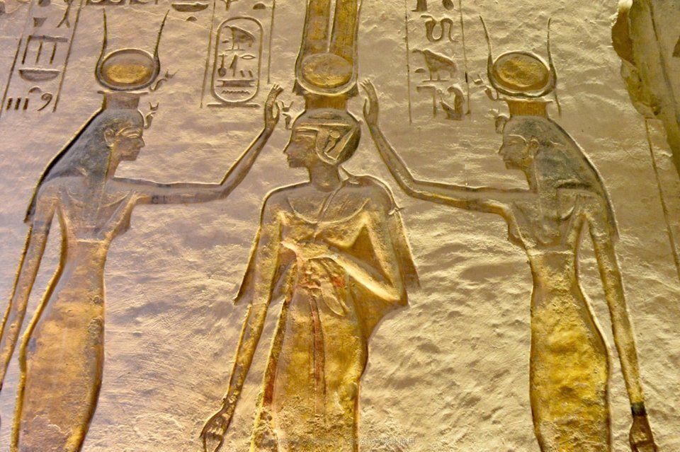
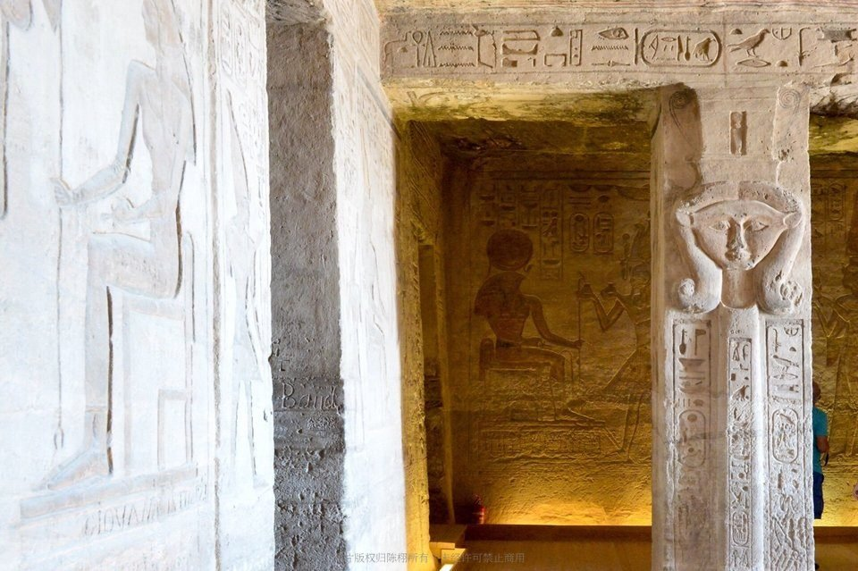
康翁波神庙和别的神庙一样，它也有高大的石柱和因残破而显得苍凉的庙殿，但与众不同的是，它有两个大门。一个大门是专为鹰神荷鲁斯所建的，另一个是专为鳄鱼神所建，因此康翁波神庙又被称为“双神殿”。
第6天 埃德夫-卢克索（尼罗河游轮） 06:30 早餐: 游轮自助 07:30 乘马车去荷鲁斯神庙 行驶距离: 约10公里 | 行驶时间: 约20分钟 | 游览时间: 约1小时40分钟 10:30 自由活动 12:00 途径伊斯那 13:00 午餐: 游轮自助 14:00 自由活动 17:00 卢克索神庙 步行距离: 约1公里 | 步行时间: 约10分钟 | 游览时间: 约1小时40分钟 20:00 晚餐: 游轮自助
自驾马车从码头到荷鲁斯神庙，动感十足！多亏小工具中的夹子，间隔2秒……行驶20分钟得9秒。
荷鲁斯神庙修建于公元前237年，历时200多年才竣工完成，主要供奉鹰头人身的天神荷鲁斯。荷鲁斯是古埃及最重要的神之一，是太阳神奥利西斯与保护女神伊西斯的孩子，通常被描述为戴着埃及皇冠的神鹰，古埃及的法老们都视自己为荷鲁斯的化身。
外柱厅的壁画上可看到托勒密九世对荷鲁斯敬拜的画面，而内柱厅内就刻了托勒密王朝时期举行宗教仪式的场面，厅内有不少用来储存祭品的储物室。圣殿外厅是用作摆放供品的地方，而圣殿本来是摆放了荷鲁斯的金雕像的，但是雕像早已不知所踪。
荷鲁斯是古代埃及神话中法老的守护神，是王权的象征，同时他也是一位战神。他的形象是一位鹰头人身的，头戴埃及王冠，腰围亚麻短裙，手持沃斯能量手杖与安柯生命符号的神祇。他的眼睛是太阳和月亮。当新月出现时，他就成了一个瞎子，没有眼睛的人，而当他的视力恢复时，他又成为有眼睛的人。眼盲时的荷鲁斯是非常危险的，他有时会将朋友误认为敌人并发起攻击。他是奥西里斯与伊西斯的儿子，是莱托波里斯的守护神。
在埃德夫神庙西部内墙的壁刻描绘了两位神祇之间的大战——根据埃及神话，赛特杀死了为埃及人带来文明的欧西里斯，欧西里斯的儿子荷鲁斯为报父仇，在伊德富与赛特决战，最后荷鲁斯成功杀死赛特，于是埃德夫就成了供奉荷鲁斯的地方；而埃及人亦每年都会在这里庆祝荷鲁斯战胜了赛特。
多个世纪以来，荷鲁斯神庙一直埋在12米的沙土以及由尼罗河沉淀的淤泥下。而当地居民亦直接的在埋藏着神庙的土地上兴建家园。当法国于1798年远征队到来，神庙塔门的顶部才得以被发现。到了1860年，法国的埃及学家奥古斯特·马里埃特开始发掘神庙的工作。位于圣殿后的圣所放有荷鲁斯圣船的复制品，而围绕着圣殿的十间圣所则是属于其他神祇的。
神庙的内柱厅右边有楼通往庙顶，楼梯的墙壁上刻有新年庆祝的情景——每逢古埃及的元旦，祭师会把荷鲁斯的神像抬到庙顶，让他的灵魂吸取太阳的能量。
古埃及记录数字的象形文字，据说这是一百万的意思，能看出来多就爽！
每年在神庙进行的宗教活动包括：模仿荷鲁斯伴侣哈索尔到访的仪式；于庙内为被视为荷鲁斯在人间化身的法老进行加冕典礼；以及及重新扮演荷鲁斯出世的情景等。
尼罗河是一条流经非洲东部与北部的河流，自南向北注入地中海。与中非地区的刚果河以及西非地区的尼日尔河并列非洲最大的三个河流系统。尼罗河长6670公里，是世界上最长的河流。由于有水位落差，在伊斯纳经历过闸的过程，全程40分钟，得到了7秒……
卢克索神庙位于市中心，曾经只是用来庆祝新年的小神殿，后来阿蒙霍特普三世、图特摩斯三世和拉美西斯二世相继对此进行扩建维修，把这里作为迎接阿蒙·拉神、穆特女神和孔苏神的祭奠之处，所以又被称为“阿蒙神的南部别宫”。
说到埃及，人们就想起金字塔。其实金字塔只是公元前26世纪左右古王朝的遗迹，而之后中王朝与新王朝时期的遗迹则集中在卢克索。卢克索古迹中最引人注目的之一就是尼罗河东岸的卢克索神庙。
通过第一院后游客进入一道柱廊，这道柱廊由7对纸莎草捆柱组成，在柱廊入口后不久两边就各有一尊法老像，其后的一对坐像显示着阿蒙与姆特。虽然这些像上刻有拉美西斯的名字，但是从风格上它们应该是埃及第十八王朝时造的。柱廊两边的墙上绘有奥皮特节的情景。
第二院的南边是一座廊柱殿，它由4x8根廊柱支撑。其浮雕显示阿蒙霍特普三世在底比斯的众神前以及他的加冕。左右两边各有一座小神殿，这两座小神殿分别是奉献给姆特和孔斯的。
2013年5月24日晚上11点多，网友“空游无依”发微博称，他在5月6日卢克索游玩时拍到一张照片，照片中的埃及卢克索神庙的浮雕上看到了“丁锦昊到此一游”几个字，“我们试图用纸巾擦掉这羞耻，但很难擦干净，这是三千五百年前的文物呀。”目前浮雕右侧人物身上的中文涂鸦已基本被清除。这也引发了国家旅游局的中国公民出境旅游文明公约。
自从5000年前,卢克索建筑群完成以来，季节性的尼罗河泛滥会把神庙立柱上的盐分洗刷掉。这些盐分是在旱季形成的。但是阿斯旺大坝建成后，尼罗河水位就经年维持在相同水平，这造成了神庙积累的盐分越来越多。另外附近的甘蔗田和稻田使用的化肥等有机物也加速了盐碱化过程。积留的河水成为细菌和真菌的温床，使文物保护问题变得更复杂。
狮身人面兽大道从尼罗河畔朝拜的人首先来到内克塔内布一世造的前院，从这里有一条两旁蹲坐着上百狮身人面像的大道通向东北方向。在古代这条大道连接卢克索神庙与3公里外的卡尔纳克神庙。
第7天 卢克索-赫然格达（红海） 05:00 卢克索热气球 06:30 门农巨像 行驶距离: 约30公里 | 行驶时间: 约40分钟 | 游览时间: 约15分钟 07:00 帝王谷 行驶距离: 约8公里 | 行驶时间: 约10分钟 | 游览时间: 约1小时20分钟 09:00 哈特谢普苏特女王神殿 行驶距离: 约10公里 | 行驶时间: 约15分钟 | 游览时间: 约45分钟 10:30 午餐：中餐 11:30 卡尔纳克神庙 行驶距离: 约15公里 | 行驶时间: 约20分钟 | 游览时间: 约1小时40分钟 14:30 驱车前往赫尔格达 行驶距离: 约380公里 | 行驶时间: 约4小时 17:30 入住酒店赫尔格达佳日海滨亲水度假酒店(Jaz Aquamarine Hurghada) 20:00 晚餐: 酒店自助
卢克索的热气球很经典，可以俯瞰整个帝王谷，因为埃及下雨很少，基本都能看到日出。热气球有两三家公司经营，大概十多个热气球，数量比土耳其卡帕少很多，所以拍照不算壮观，但是价格比卡帕便宜一半。
旅行社给出的热气球价格大概130-180美金/人，因为这是自费项目，含了服务费和导游小费、给旅行社的返佣等，所以贵些。但是就算你私人预定，也不会便宜太多。网上说的那些30多美金的，往往是热气球公司员工私下兜售的，绕开公司，私下搞的交易，这种交易并没有具体的保障，有些只飞行20分钟就下来了，基本没有保险，没有客人的登记等。在埃及这类情况并不少见，很多客人觉得占了便宜，其实自己承担风险。
我们最先起飞了，算不算是赚到了时间，这也是一个拍摄延时的绝佳机会，把设备固定在吊篮外侧，间隔8秒……
从另个角度看世界是乘热气球的魅力所在，原本具象的田地变成了有纹理的色块、房屋变成了跃动的点缀，绝对就是一幅现代画……
今天的卢克索是世界上最大的露天博物馆，有着“宫殿之城”的美誉。尼罗河穿城而过，将卢克索一分为二。由于古埃及人认为人的生命同太阳一样，自东方升起，西方落下，因而在河的东岸是壮丽的神庙和充满活力的居民区，河的西岸则是法老、王后和贵族的陵墓。“生者之城”与“死者之城”隔河相望，形成两个世界的永恒循环的圆圈。
卢克索因埃及古都底比斯遗址在此而著称，底比斯兴建于中王国第十一王朝时期，至今已有四千多年的历史。到新王国十八王朝，底比斯进入鼎盛时期，城市跨尼罗河中游两岸。据说当时的底比斯人烟稠密、广厦万千，城门就有一百座，荷马史诗中把这里称为“百门之都”，是世界上最大城市。
古埃及帝国维持了1500多年，历代国王、法老在底比斯兴建了无数的神庙、宫殿和陵墓。经过几千年的岁月，昔日宏伟的殿堂庙宇都变成了残缺不全的废墟，但人们依然还是能够从中想见它们当年的雄姿，它们是古埃及文明高度发展的见证。
在近700年的时间里，法老们就从这颗“上埃及的珍珠”发号施令，使古埃及的政治和经济达到了辉煌的巅峰，领土南接苏丹、北达叙利亚，成为地跨东地中海地区北非、西亚的第一强国。此间法老们不断扩展他们的版图，并建造了无数的神庙与庞大的墓群。公元前88年被毁。
据考古学家估计，约有500座古墓散布在卢克索地区，仅尼罗河西岸著名的“帝王谷”就有64座帝王陵墓，现有17所对外开放。陵墓的形制基本相同，坡度很陡的阶梯通道直通陵墓走廊，走廊通墓前室，室内有数间墓穴，放木乃伊的花岗岩石棺停放在最后一间墓穴。因此，卢克索成了古埃及遗迹的宝库，是探访埃及古文明不可不到的地方。
今天埃及人的归宿，在尼罗河西岸“死者之城”能拥有这么一个地方也算个帝王位置了。另个角度来说，各种几何图形也是大地上的一种纹理，清真寺的圆型说明宗教对于这片土地上人的重要，生也如此死也如此。
卢克索的人们天不亮起床、端茶倒水、开船导航、谆谆教诲、祈求平安，只为我们能开开心心地完成热气球旅行，结束后卢克索的人们又在快速整理装备，非常老练……这才是安心的保障！
帝王谷不允许拍摄，买摄影门票或者意思意思都不可以，只能用眼睛去看了。以前被称为“万代法老之大墓地”或是“真理之地”，包含从新王国时期以来修建的63座王室墓室。国王谷地处隐蔽，四周是陡峭的悬崖，易于守卫。从底比斯平原看来，这一带就是太阳西沉的地方，古埃及人通常把这里和来生联系在一起。
这是埃及历史上赫赫有名的哈齐普苏特女王和她的父亲图特摩斯一世亲自建造的神庙。它坐落在危崖环伺的谷地中，两道长阔的斜坡将三座平广的柱廊建筑串联起来，整体造型简洁明快，却显露出不可一世的气势。
哈采普苏特是第十八王朝法老图特摩斯一世的女儿，她是除克莉奥佩特拉以外另一位成为法老的女性。哈采普苏特将自己的陵庙建在峭壁上，以一种优雅的效果显示其统治的长治久安。陵庙分为三层，刻有许多富含深义的浮雕。
卢克索的人们是幽默的，非要向我展示一个象征王权的姿势，和后面石像一摸一样的……
卡尔纳克神庙始建于3900多年前，是古埃及帝国遗留的一座壮观的神庙。神庙内有大小20余座神殿、134根巨型石柱、狮身公羊石像等古迹，气势宏伟，令人震撼。卡纳克神庙是埃及中王国时期及新王国时期首都底比斯的一部分。
保存最完整、规模最大的是卡尔纳克神庙。它的殿堂占地达5000平方米，有134根圆柱高耸入天，其中最中间的12根高21米，5人不能合抱，通体遍布精美浮雕。400余年前，第一个走入这“多柱大厅”的欧洲人在烈日下惊呆了：“我走进去，一眼看到整行整列的巨大圆柱，还以为自己在做梦！”
主殿有十分壮观的柱子，柱身和墙壁上满是雕刻和象形文字铭文，著名的《图特摩斯三世年代记》、拉美西斯二世有关卡迭什战役的情况和铭文就刻在这些柱子和墙壁上，为历史研究提供了有力的实物资料。
它是古埃及法老们献给太阳神、自然神和月亮神的庙宇建筑群，是世界上最壮观的古建筑物之一，也是埃及最大的神庙。神庙曾作为著名影片《尼罗河上的惨案》的外景地而名声大振。
卡尔纳克神庙在开罗以南700公里处的尼罗河东岸，是古埃及规模最大的神庙建筑群，是底比斯最古老的庙宇。始建于公元前2000年，期间一共有50多位法老参与建造。
方尖碑是世界上第一位女王、古埃及惟一的女法老哈特谢普苏特女王所立，碑身全高29米，重323吨，是当时最高的方尖碑，也是现在埃及境内最高的方尖碑。哈特谢普苏特女王是开创古埃及新王国时期一代盛世的图特莫斯一世法老的女儿，图特莫斯二世法老的同父异母妹妹兼王后，图特莫斯三世法老的姑姑、嫡母和岳母。女王自幼志向远大，秉性刚强，立志要当全埃及的最高统治者，在辅佐丈夫图特莫斯二世法老执政期间，即热衷朝政，觊觎国家统治权力。当二世去世以后，迫于女子不能当法老的世俗压力，女王不得不扶植自己的庶子、年仅9岁的图特莫斯三世当了法老。无奈三世也是一代英主，当年事稍长，便不甘傀儡，蠢蠢欲动。女王于心不甘，于是废黜三世并把他赶到卡尔纳克神庙里来当了一名普通祭司，自己这才加冕登极。为了应天顺人，女王花了7个月的时间从阿斯旺采下石料制成当时全埃及最大最高的两座方尖碑，沿尼罗河长途运输150公里，立在这座全埃及最大最神圣的神庙里，献给太阳神阿蒙，并在碑上刻下铭文称自己为阿蒙神的女儿和儿子，以此证明自己承继大统的合法性。
作为埃及最大的神庙，卡纳克神庙给人的感觉就是夸张，且不说塔门巨大而厚重，雕像高大而挺拔，就连多柱厅中的134根圆柱子，高度竟然有22米，每根“盛开”的莲花大圆柱顶可以站立100余人。中国古代文人追求语不惊人死不休的境界，古埃及人则做到了塔不惊人死不休，庙不惊人死不休。卡尔纳克神庙之所以如此著名，不仅因为它的壮丽，而且因为它的建筑元素，例如大圆柱和轴线式设计，先后影响了希腊建筑和世界建筑。
拍摄了40分钟，得6秒。单凭肉眼，是不容易看出光影移动的，延时很费时费力但可以直白地展示时间的流动……真有点弹指一挥间的感觉！
入住Jaz Aquamarine Hurghada酒店，一个阿拉伯风格的，神秘而华丽……酒店里的住客几乎全部都是欧洲人，在我眼里都是一样的，但是从餐厅里提供的菜名以及旁边的国旗能看出，这里有德国人、意大利人、法国人、英国人、俄罗斯人……
第8天 赫尔格达 09:00 吉夫顿岛游览 行程距离：约20公里 | 行驶时间：约30分钟 | 占用：约240分钟 13:00 午餐: 酒店自助 15:00 撒哈拉沙漠四驱吉普冲沙 行驶距离: 约20公里 | 行驶时间: 约30分钟 | 游览时间: 约5小时 20:00 晚餐: 酒店自助
一行的8个人包租了游艇出海了……第一站天堂岛游泳，然后是浮潜，海上埃及船家自助餐、最后是海上垂钓……
红海的水真的很好，超过塞班、帕劳……真的有心在红海边买一套房度假用，才20万人民币！
红海天堂岛，很棒的海水……
撒哈拉沙漠冲沙，日落前的一棵树，生命力令人惊叹，无水无人照料已有150岁了，是棵橡胶树……
贝都因人是以氏族部落为基本单位在沙漠旷野过游牧生活的阿拉伯人。“贝都因”为阿拉伯语译音，意为荒原上的游牧民、荒原上的游牧民、逐水草而居的人，是阿拉伯民族的一部分。
美国学者希提在他的《阿拉伯通史》中这样写道：“贝都因人、骆驼和枣椰，是沙漠中一切生物的三位一体的统治者；再加上沙子，就构成了沙漠里的四大主角。”沙漠的生存环境形成了贝多因人独特的民族个性，沙漠不仅是他们的一个长期的居住之地，也是他们神圣传统的守护者，更是他们纯粹的语言和血统的保卫者。
贝都因人生活在沙漠、荒原、丘陵和农区边缘地带，一般靠饲养骆驼为生，按季节和固定路线进行有规律的移动。在农区边缘地带度过最炎热、干旱的季节，参加集市，出售畜产品或采集香料，买回椰枣、食粮 、生活必需品。每当雨季到来、沙漠水草生长之际，他们便向沙漠深处进发。
沙漠深处也少不了清真寺，穆斯林教徒要履行每日五次的时礼，每周一次的聚礼，宗教节日的会礼。每日五次的时礼，第一次称晨礼，在拂晓举行；第二次称晌礼，在中午1时至3时举行；第三次称晡礼，在下午4时至日落前举行；第四次称昏礼，在日落后或太阳的白光消逝前举行；第五次称宵礼，在入夜至拂晓前进行。聚礼又称主麻日礼拜，是集体的公共祈祷，一般在星期五举行。会礼则在每年的开斋节和古尔邦节举行。礼拜的前提条件是身体清洁，礼拜前必须按规定作大净或小净。
第9天 赫尔格达-开罗 08:00 早餐: 酒店自助 09:30 返回开罗 13:00 午餐：途中盒餐 行驶距离: 约504公里 | 行驶时间: 约6小时 17:00 哈利利市场 19:00 晚餐: 烤鸽子餐 20:00 入住酒店梦境赫尔南国际酒店(Helnan Dreamland Hotel) 行驶距离: 约15公里 | 行驶时间: 约30分钟
JAZ酒店是个很大很漂亮的度假村，趁着早上天光好，逛逛园子。
埃及人受外星人帮助的有力证据。
汗·哈利利市场位于开罗老城区，古老的艾资哈尔清真寺对面，是一个伊斯兰风格的古市场，由分布在几十条小街巷里的几千家个体小店组成。市场历史可追溯到公元14世纪，“汗”一词出自波斯语，意为“饭店”，“哈利利”是建造该饭店的主人的名字。
哈利利市场是久负盛名、历史悠久的的大市场，14世纪起就开始营业，也是游客采购旅游纪念品的好去处。由于游客云集，时至今日哈利利市场现在基本已经成为一个专门针对外国人的市场，其实本地人倒不怎么去那里购物。
我喜欢“我的历史”。开罗哈利利市场川流的人群与嘈杂的叫卖声中，我蹲下身，那猫就朝我走来，瞪着大眼睛，鼻尖轻轻闻了闻我的手，过去了。也许我们已经交换了某些记忆，谁说的准呢？ 摘自吴欣还《我在埃及碰到的7位猫》
浴盐
也是洗澡的
主动耍帅的哥
灯光亮起来了，埃及人又开始与神的对话了，
第10天 开罗-孟菲斯-开罗-伊斯坦布尔 08:00 早餐: 酒店自助早餐 09:30 塞加拉金字塔群 行驶距离: 约20公里 | 行驶时间: 约1小时 | 游览时间：约1小时 10:30 孟菲斯博物馆 行驶距离: 约5公里 | 行驶时间: 约10分钟 | 游览时间：约1小时 12:30 午餐: 中餐 行驶距离: 约10公里 | 行驶时间: 约10分钟 13:30 吉萨金字塔 与 狮身人面像 行驶距离: 约5公里 | 行驶时间: 约10分钟 | 游览时间：约3小时 16:30 前往开罗机场 行驶距离: 约20公里 | 行驶时间: 约1小时30分钟 21:00 经伊斯坦布尔返回北京 航班：TK695 21:00-00:20+1
萨卡拉金字塔南郊30公里，尼罗河西河谷绿洲边缘外的沙漠上，由多个金字塔组成。其中最著名的是阶梯金字塔，为古埃及第三王朝国王左塞尔的陵墓，该金字塔是埃及现有金字塔中年代最早的，也是世界上最早用石块修建的陵墓。
萨卡拉金字塔还有一道奇妙的风景线，以通往萨卡拉金字塔的公路为界，整齐的将绿洲和沙漠分隔开。公路的一侧也就是萨卡拉金字塔的方向，寸草不生直接便是萨哈拉沙漠，而另一侧却长满了茂密的热带植物，仅仅一路之隔景色天差地别。
萨卡拉金字塔呈6层阶梯塔状，高约60米。在该金字塔附近还分布着许多贵族和大臣陵墓，其中大量的精美浮雕壁画，栩栩如生的描绘了古代埃及人工作和生活的情景。另外，附近的神牛墓也非常有名。
孟斐斯博物馆是一座半露天的博物馆，露天部分展示的最著名的藏品，是拉美西斯二世的雕像和雪花石膏雕塑的狮身人面像。
“我觉得希罗多德更像是一个在沙漠里游走的闲人，穿行于绿洲之间，与人交换传奇故事，好像那是种子一般，毫不怀疑地一网打尽，拼凑出一个海市蜃楼。‘我的历史，’希罗多德这样说，‘从一开始就是在寻找对主流叙述的补充。’他描述的都是历史长河中的种种绝境和僵局——人们如何为了国家而彼此背叛，人们如何陷入爱河......” 摘自吴欣还《我在埃及碰到的7位猫》
金字塔无疑是开罗乃至全世界最著名的旅游景点了，同时也是每个来开罗的游客必到景点。金字塔内部除了一个疑似石棺的东西，基本就是空空如也。建筑上的超高难度再加上各种数字上的巧合，让这建筑充满了神秘色彩。游客到此就是真真切切的感觉建筑的宏伟。
影子是个奇妙的东西，天上飞过大飞机，都在金字塔上有痕迹。在埃及的第九天，拍摄了54段2G多的素材，是个不容易的过程……要感谢有个好导游冰冰，埃及大学的学霸，给我们在团队游的行程里很好地规划了时间；在一个陌生的地方有限的时间里要抓住重点，不能不做行前功课也不能不多与冰冰沟通交流；每次只有一个大段时间的拍摄机会，只能成功不能失败好难；旅行因为要拍延时才慢下来，感受时间的流动，而被拍摄的对象为了遇见我已经等待了几千年，与这相比慢下来的几十分钟简直不值得提起；也有很多遗憾，因为有些参观时间天光非常足，对比强烈，导致颜色变化不够，也许这就是再去的理由！延时是一种浓缩，埃及的历史埃及的旅行何尝不也是一种浓缩呢，比如有的神庙2个小时看过，可是它的建设过程足足有200年……人在这些遗存面前都是渺小的，人是幸运的有机会亲眼看看6000年前人们创造的作品。延时是个好技术，用时间流动与埃及6000年遗存对话算是致敬吧！
历史成了传说，传说又成了神话，这是电影《魔戒》的开场白。尽管罗塞塔石碑让商博良破译了埃及古文字，但我们仍然不能完全读懂那些逝者身旁的亡灵书。历史无法被完全还原，这也是他的魅力所在。就算来源于同样的史书、旅行手册、网络、旅途中的专业讲解，每个人所看所想还是不会相同......在时空门前，每个人编织自己眼中的历史，哪怕结伴同行，也是不一样的旅途。所以人注定孤独，路只能一个人走。 摘自吴欣还《我在埃及碰到的7位猫》
不到两周的旅行只是个开始，真想让各种知识、故事、神话及道听途说像从前的尼罗河水一样泛滥一次，坐等退去后肥沃的土壤，随便种点什么，踩踩都能疯长，长出各种好玩的胡思乱想......是什么？不可说也不必说，那是我自己的“海市蜃楼”， 在去往阿布辛贝拉美西斯二世神庙的沙漠公路上，我也平生第一次真的看到了海市蜃楼......这样的旅程只能一个人独享，是否这才是真正的“自由行”。 摘自吴欣还《我在埃及碰到的7位猫》
第11天 伊斯坦布尔-北京（飞行时间约8小时左右） 01:25 转机前往北京 航班：TK20 01:25-15:25 15:20 抵达北京,结束埃及之旅
终于定版了，本想做个99秒的，但是无奈素材和音乐都不能配合，那就89秒吧！有机会再自由行去埃及拍一组同样内容的，专门选择好的时光把天空都染上颜色……要感谢还还的陪伴、冰冰的时间安排以及彭程的后期！腾讯视频搜索《89秒埃及已过六千年》观看全片！ 一起走，四时的光，行走的种子，在路上……
留言